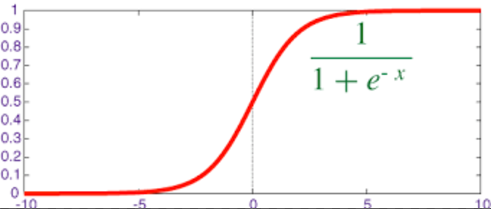

分类算法之逻辑回归
逻辑回归（Logistic Regression），简称LR。它的特点是能够是我们的特征输入集合转化为0和1这两类的概率。一般来说，回归不用在分类问题上，因为回归是连续型模型，而且受噪声影响比较大。如果非要应用进入，可以使用逻辑回归。了解过线性回归之后再来看逻辑回归可以更好的理解。
优点：计算代价不高，易于理解和实现
缺点：容易欠拟合，分类精度不高
适用数据：数值型和标称型
逻辑回归
对于回归问题后面会介绍，Logistic回归本质上是线性回归，只是在特征到结果的映射中加入了一层函数映射，即先把特征线性求和，然后使用函数g(z)将最为假设函数来预测。g(z)可以将连续值映射到0和1上。Logistic回归用来分类0/1问题，也就是预测结果属于0或者1的二值分类问题
映射函数为：
其中
映射出来的效果如下如：

sklearn.linear_model.LogisticRegression
逻辑回归类
class sklearn.linear_model.LogisticRegression(penalty='l2', dual=False, tol=0.0001, C=1.0, fit_intercept=True, intercept_scaling=1, class_weight=None, random_state=None, solver='liblinear', max_iter=100, multi_class='ovr', verbose=0, warm_start=False, n_jobs=1)
"""
:param C: float，默认值：1.0
:param penalty: 特征选择的方式
:param tol: 公差停止标准
"""

from sklearn.model_selection import train_test_split
from sklearn.datasets import load_digits
from sklearn.linear_model import LogisticRegression
LR = LogisticRegression(C=1.0, penalty='l1', tol=0.01)
X_train, X_test, y_train, y_test = train_test_split(X, y, test_size=0.33, random_state=42)
LR.fit(X_train,y_train)
LR.predict(X_test)
LR.score(X_test,y_test)
0.96464646464646464
# c=100.0
0.96801346801346799
属性
coef_
决策功能的特征系数
Cs_
数组C，即用于交叉验证的正则化参数值的倒数
特点分析
线性分类器可以说是最为基本和常用的机器学习模型。尽管其受限于数据特征与分类目标之间的线性假设，我们仍然可以在科学研究与工程实践中把线性分类器的表现性能作为基准。